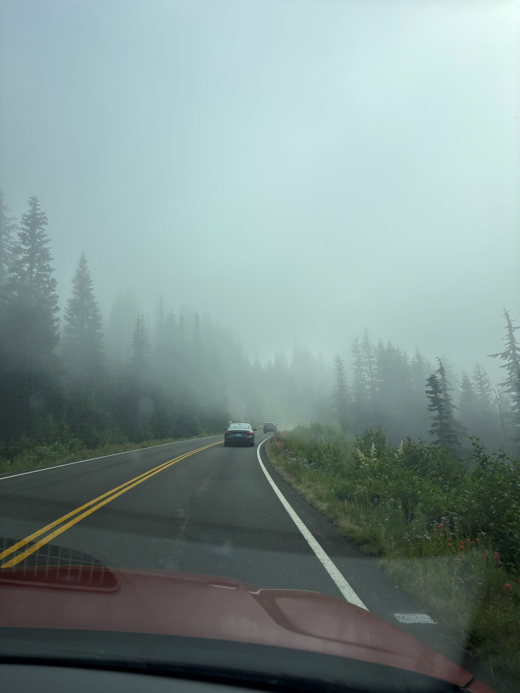
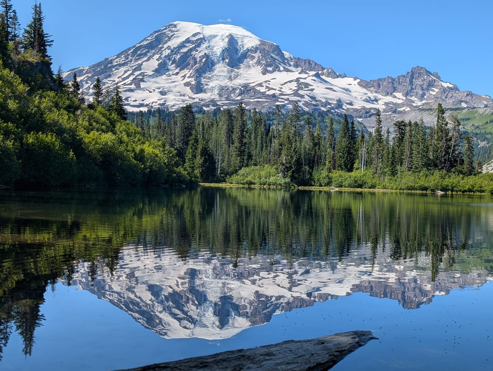
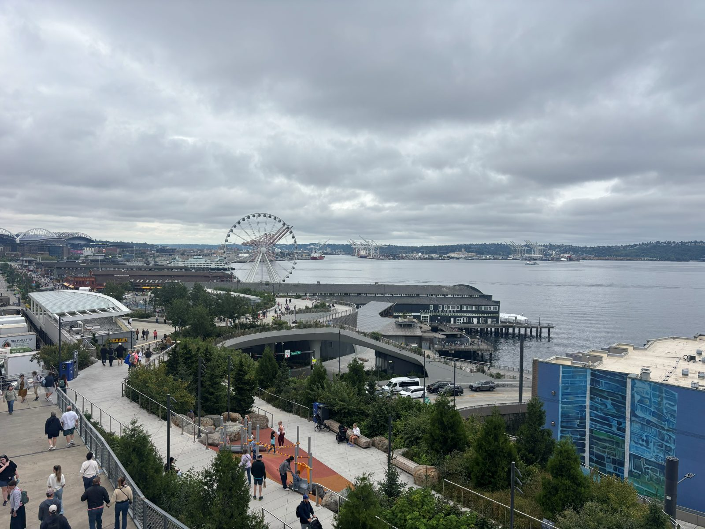

MT RAINIER 2026
Day 1 - 7/15 (9.4 miles)
- Woke up at 4:30 and got picked up for the airport at 5:00
- Landed 35 min early and got the rental car and started driving
- Drove about 2 hours or so to Sunrise Rim Trailhead
- Stopped on the way to get snacks and stuff for the next couple days
- Hiked to Mount Fremont Fire Lookout, 2nd Boroughs Mountain, and Shadow Lake
- Crowded trail but pretty good views
-
1 / 5
- Drove to a convenience store nearby for more snacks to put in the fridge at the lodge
- Drove to Alta Crystal Lodge and showered and packed for the next day
Day 2 - 7/16 (16 miles)
- Got up and drove to Glacier Basin Trail (8.96 miles)
- Slow hike, pretty empty, through Endor with a steady uphill grade but once we got the campsite it got beautiful and very fun
- Shortly after the camp, the trail stops being maintained and is just marked from past hikers
- We got lost for a couple minutes because it crosses a dried up creek where you can't tell where the trail goes
- Hiked over this spine next to the big dried up river
- Saw some mountain climbers coming down the mountain towards us
- One of the best views we've had on a hike when we ate and saw the whole basin and mountain
-
1 / 4
- Ran down from the top at a 13 minute average mile pace
- Drove to Naches Peak Loop (7 miles)
- Another crowded trail, more meadows than before
- Did a 2-3 mile add-on down to Dewey Lake and dipped our feet in the colder lake
- Gave an old lady our last electrolytes after she puked and was really struggling to get up the last part
-
1 / 5
- Drove through a bunch of fog to Mill Village Motel in Eatonville

Day 3 - 7/17 (18ish miles)
- Got up and went to Longmire to start the hike to Indian Henry's Hunting Ground (15-17 miles)
- Another long trek through three forest up to the top but there were a few good views on the way up including a ravine and some meadows towards the top
- Ended at a ranger cabin in a meadow where we had lunch and talked to some older guys who were going up a couple medium sized peaks nearby
-
1 / 8
- This one was another one of our favorites, and my personal favorite view of the mountain in the dried river with the washed out wall on the side
- Drove a little to Bench and Snow Lakes (2.4 miles)
- Bench was cool since it reflected Mt. Rainier on the lake
- Snow wasn't worth it since it was crowded and really really not that special

- Drove to the Ukrainian restaurant but they had an hour wait and we were hungry so we went back to Mill Haus and they were maybe 5x busier than the night before
- They had a wedding group with 80 people, live music the whole time we were there, and we ate and then drank and enjoyed the music
- Went home and got ready for Seattle
Day 4 - 7/18 (5 miles)
- Got up and out the door earlier than expected so we checked out Pike Place Market and got breakfast at Hart and Hunter

- Grabbed souvenirs and went to Pike again for horchata and steamed pork buns for a snack
- Got to the airport super early and walked into the lounge asap
- We spent about 3 hours in the lounge thanks to our flight's delay drinking, eating, and watching a crazy France vs England 3rd place match
- Flew home and got back at around 2:00 AM